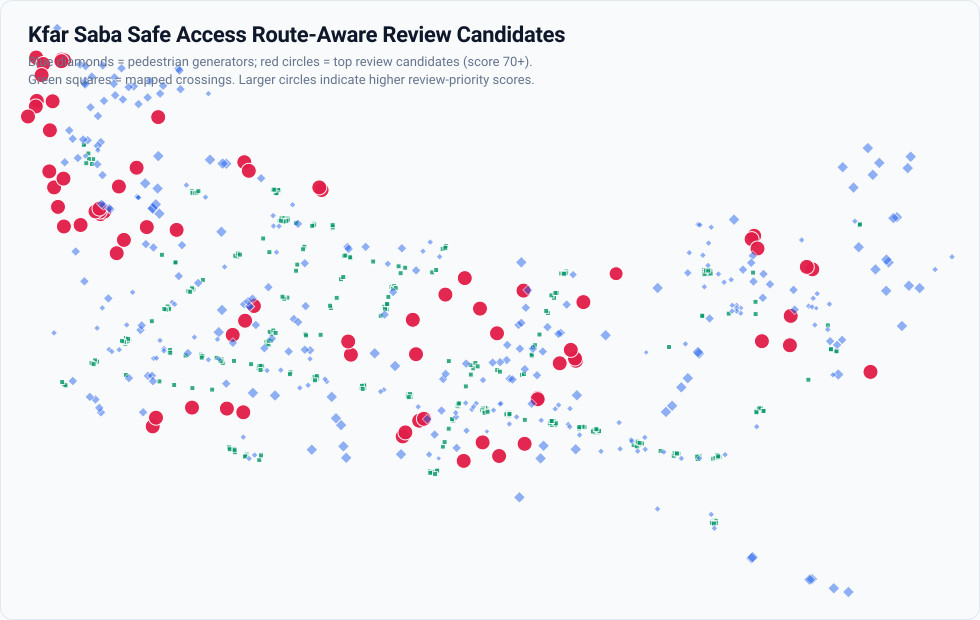

Pedestrian generators391
Crossings342
Road segments2603
Traffic signals121
Traffic calming11
PBF points read1509
Route median m218.6
Route >250 m169
Static map preview

Top review candidates
| ID | Type | Name | Straight m | Route m | Ratio | Route score | Flags |
|---|---|---|---|---|---|---|---|
| gen_0388 | school | רחל המשוררת | 170.8 | 430.6 | 2.26 | 110 | generator_far_from_network_proxy, high_network_detour_ratio, route_nearest_crossing_over_250m |
| gen_0301 | park | 226.7 | 472.5 | 2.08 | 105 | high_network_detour_ratio, route_nearest_crossing_over_250m | |
| gen_0372 | school | חטיבת שרת | 339.7 | 477.0 | 1.37 | 100 | generator_far_from_network_proxy, route_nearest_crossing_over_250m |
| gen_0366 | school | חטיבת הביניים ע"ש יורם טהרלב | 254.5 | 409.2 | 1.50 | 100 | generator_far_from_network_proxy, route_nearest_crossing_over_250m |
| gen_0373 | school | חטיבת שז"ר | 270.6 | 334.0 | 1.19 | 100 | generator_far_from_network_proxy, route_nearest_crossing_over_250m |
| gen_0379 | school | 221.0 | 273.4 | 1.20 | 100 | generator_far_from_network_proxy, route_nearest_crossing_over_250m | |
| gen_0190 | kindergarten | 668.6 | 1028.6 | 1.54 | 95 | route_nearest_crossing_over_250m | |
| gen_0168 | bus_stop | דמרי סנטר/ספיר | 720.3 | 984.6 | 1.37 | 95 | route_nearest_crossing_over_250m |
| gen_0158 | bus_stop | דמרי סנטר/שלמה וחיה אנגל | 660.0 | 861.8 | 1.31 | 95 | route_nearest_crossing_over_250m |
| gen_0215 | kindergarten | גן אפיק, יובל, מעיין, נחל | 660.4 | 812.0 | 1.23 | 95 | route_nearest_crossing_over_250m |
This location has infrastructure risk indicators and should be reviewed on-site.
Data quality note
Missing OSM tags are tracked as data-quality flags, not proof that real-world infrastructure is absent.